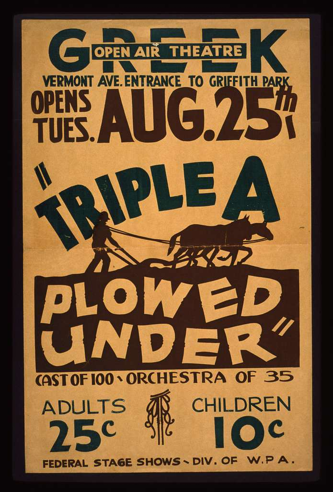
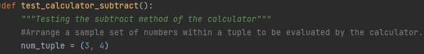
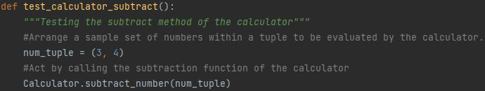
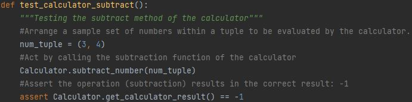
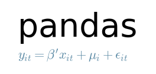

Triple-A Testing

Testing Pattern:
Arrange - Where data is created for a test, or set inputs are established. In the instance of the calculator
for AAA testing a fixture is generated specifically to evaluate the history features within the calculations.py class. For the
calculator_test.py test cases arranging is observed within the line num_tuple = (3,4).

Act - Defines what will be targeted for the test. Within the
test_calculator_subtract example, the Act specifically
calls the Calculator.subtract_number function on the num_tuple data.

Assert - Evaluates whether our test returned expected outcomes for the
test data and operation provided as a PASS/FAIL. For the provided example num_tuple when performing subtraction should return 3-4 = -1.
This assert specifically evaluates the outcome of Calculator.subtract_number
on num_tuple and nothing further.

External Data Testing

Importing External Data:
Pandas
Pandas is a data analysis tool often utilized within Python for importing, manipulating, and storing data. For external test data importation, we will specifically look at
the read_csv() function. Read_csv() provides the user with a myriad of tools and can be further advanced with tkinter filedialog, however
for this tutorial only read_csv() as the function and Pandas (as the imported package) are required.
With Pandas imported, the arrange statement should follow a similar structure to:
#Arrange
test_csv_data = Pandas.read_csv(file_path,**kwargs)
kwargs - keyword arguments, specify that within the Pandas.read_csv() function
documentation that parameters can be directly passed for opening the csv file (such as specifying the delimiter type, header existence, or the data type).
This arranges the test data into a Pandas dataframe, which can be further handled by the program as a set of tuples (row-or-column-wise) as well as maintain the path that the
data was obtained from to Act on. With necessary permissions addressed read/write can also be performed within Pandas to csv.
Importance of Testing
Testing provides a simplistic, but atomized approach to evaluate each feature and function of a program. The specificity of each
test allows for the narrowing of any unexpected outcomes or results to be resolved in an isolated manner - where a larger test of multiple
functions would fail to demonstrate a specific point of failure that cascades forward.